ASEAN Young Scientists Connect 2026: Pitching Trans-GMS LLM at Dusit Thani Bangkok
A technical field report on co-designing a low-resource multilingual medical AI with a room full of ASEAN researchers — then pitching it in 3 minutes flat
 Dr. Teerapong Panboonyuen (Dr. Kao) pitching Trans-GMS LLM at ASEAN Young Scientists Connect 2026, Vimarn Ballroom, Dusit Thani Bangkok.
Dr. Teerapong Panboonyuen (Dr. Kao) pitching Trans-GMS LLM at ASEAN Young Scientists Connect 2026, Vimarn Ballroom, Dusit Thani Bangkok.
🌏 From the Mekong to the Ballroom: Building AI for the People Left Behind
“Expert medical knowledge should not belong only to those who can afford it. It must be a basic human right for every single ASEAN citizen, no matter where they are born or how much money they have.”
🌅 6:00 AM. Another Early Morning. Another Mission.
May 19, 2026. Alarm at 6:00 — the usual. But today had a slightly more forgiving schedule. No pre-dawn rush. I left home at 7:45, giving myself enough time to arrive by 8:30 and register before the morning kicked off.
The event: ASEAN Young Scientists Connect (AYSC) 2026.
The venue: Vimarn Ballroom, Dusit Thani Bangkok.
Let me be upfront — walking into Dusit Thani Bangkok hits differently. The hotel is grand in a way that makes you stand up a little straighter. Marble, high ceilings, chandeliers. And inside that ballroom: researchers from all 10 ASEAN member states, a full day of programming, and — by the end of the afternoon — a 3-minute pitch that I did not expect to be as electric as it turned out to be.
This is the full story. Let me take you through it.
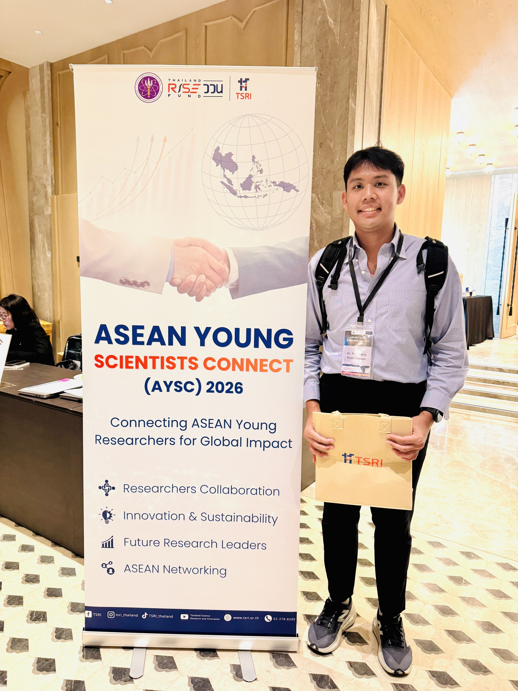
Figure 1: Arriving at ASEAN Young Scientists Connect (AYSC) 2026 early in the morning at the magnificent Vimarn Ballroom, Dusit Thani Bangkok. Registration officially began around 8:30 AM, where every participant received an event pass, conference materials, and a commemorative AYSC tote bag that unexpectedly became one of my favorite souvenirs from the event. The atmosphere immediately felt different from a typical academic seminar. Researchers, professors, policymakers, and young scientists from across ASEAN were already networking before the sessions even started. Almost the entire program throughout the day was hosted inside the Vimarn Ballroom — a venue that perfectly matched the scale and ambition of the event itself. The combination of luxury architecture, international collaboration, and ambitious conversations about science and AI made the event feel less like a workshop and more like a glimpse into ASEAN’s technological future.
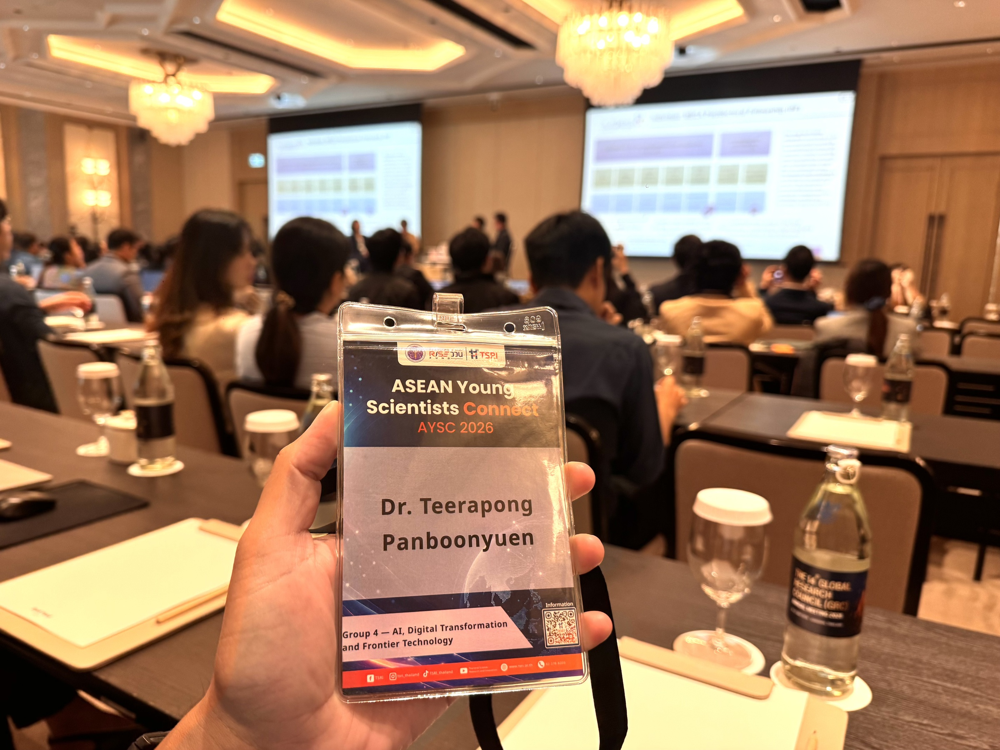
Figure 2: Taking a quick photo with my participant pass inside the Vimarn Ballroom before the major sessions officially began. One thing that stood out immediately was the diversity of participants attending the event. Most attendees were Thai researchers and university faculty members, but there were also delegates from multiple ASEAN countries joining the program — roughly several representatives per country. Conversations happening around the ballroom constantly shifted between AI, sustainability, healthcare, international funding, and regional collaboration strategies. It was fascinating to observe how ASEAN research culture is evolving toward larger interdisciplinary and cross-border initiatives rather than isolated local projects. Events like this remind me that scientific collaboration is no longer optional infrastructure for the future — it is becoming the foundation itself.
📋 What Is AYSC, and Why Does It Matter?
ASEAN Young Scientists Connect is an annual gathering organized under the Thailand Science Research and Innovation (TSRI) umbrella, designed to forge genuine research collaborations across Southeast Asia. Not keynotes-only. Not just networking. Actual co-creation.
The 2026 edition brought together researchers from all 10 ASEAN member states for a single packed day:
- Date: 19 May 2026 · 08:30 – 15:00
- Venue: Vimarn Ballroom, Dusit Thani Bangkok
- Website: aysc.tsri.or.th
My registration details:
| Field | Detail |
|---|---|
| Reference Number | AYSC26-AT2GR3C |
| Name | Teerapong Panboonyuen |
| Nationality | Thailand |
| Organization | Khon Kaen University |
| Field | Geospatial Artificial Intelligence (GeoAI) |
| Essay Theme | Theme 1: Strengthening Regional Research Collaboration for Collective Impact |
| Registered | 25 April 2026 |
The theme I chose when applying — “Strengthening Regional Research Collaboration for Collective Impact” — ended up being exactly what the day delivered. That alignment felt deliberate by the end of it.
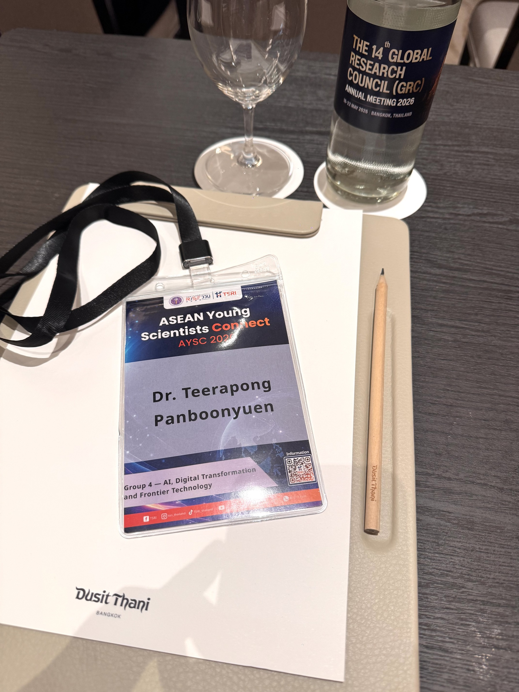
Figure 3: My official AYSC2026 participant pass. I was assigned to Group 4 under the theme “AI and Digital Transformation,” which later became the group responsible for brainstorming and pitching the Trans-GMS LLM concept. Looking back, this small badge unexpectedly became symbolic for me. It represented more than event access — it represented being part of a regional conversation about how ASEAN researchers can collaboratively shape the future of artificial intelligence, healthcare access, and digital infrastructure. Sometimes the most meaningful research ideas do not emerge from formal paper submissions or laboratories, but from spontaneous interdisciplinary conversations between people who genuinely care about solving difficult societal problems together.
🎙️ Morning: Funding, Careers, and the Reality of Cross-Border Research
09:30 – 10:30 | Panel Session: “Funding Opportunities for Global Collaboration”
The morning opened with one of the most practically useful panels I’ve sat in for a while. Three major funding bodies laid out what’s actually available for ASEAN researchers trying to do collaborative work across borders.
1. e-ASIA JRP Secretariat (Japan Science and Technology Agency — JST, Thailand node)
The e-ASIA Joint Research Program is arguably the most well-established multilateral science fund in the region. Designed specifically for multi-country teams, it covers applied research in agriculture, health, and sustainable development. The Thailand secretariat’s presence here was a signal: they’re actively recruiting teams, not just waiting to receive applications.
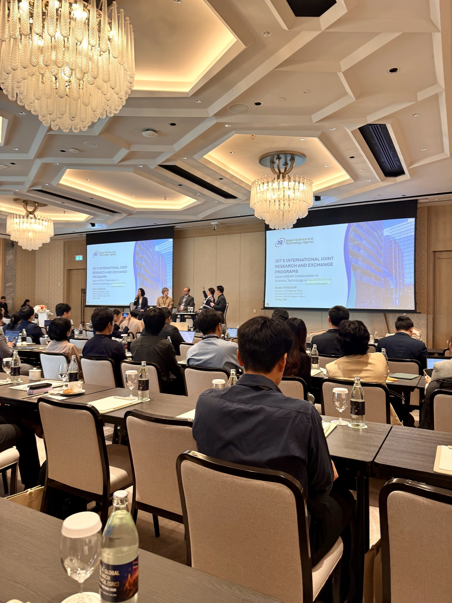
Figure 4: Morning funding session featuring the e-ASIA Joint Research Program (e-ASIA JRP Secretariat Thailand) together with JST representatives from Japan. This session explored international collaborative funding ecosystems supporting scientific partnerships across Asia. Beyond simply discussing grants, the speakers emphasized how modern research increasingly depends on multinational collaboration, interdisciplinary integration, and scalable regional impact. One important realization during this talk was that many of ASEAN’s largest challenges — healthcare inequality, climate resilience, AI governance, food security, and digital transformation — cannot realistically be solved within national boundaries alone. As AI researchers, we often spend enormous amounts of time optimizing models and improving benchmark performance, but sessions like this remind us that large-scale societal impact also requires policy alignment, funding infrastructure, and long-term international cooperation.
2. Science and Innovation Advisor, FCDO / King’s College London, Thailand
The UK’s Foreign, Commonwealth and Development Office has been quietly building science diplomacy infrastructure across Southeast Asia. The advisor present outlined how British ODA-linked research funds are increasingly positioned toward climate resilience, health systems, and digital infrastructure in the Global South — with explicit preference for ASEAN partnerships. Worth watching if you’re building a joint proposal with a UK institution.
3. EURAXESS / European Research Council (ERC)
The ERC representative outlined the Worldwide Representative program for ASEAN Focus countries. ERC funding is notoriously competitive, but the EURAXESS infrastructure — mobility fellowships, Marie Skłodowska-Curie Actions, and ERC Starting Grants — is more accessible to early-career ASEAN researchers than most people realize. The pitch: European funders want ASEAN co-investigators, not just collaborators.
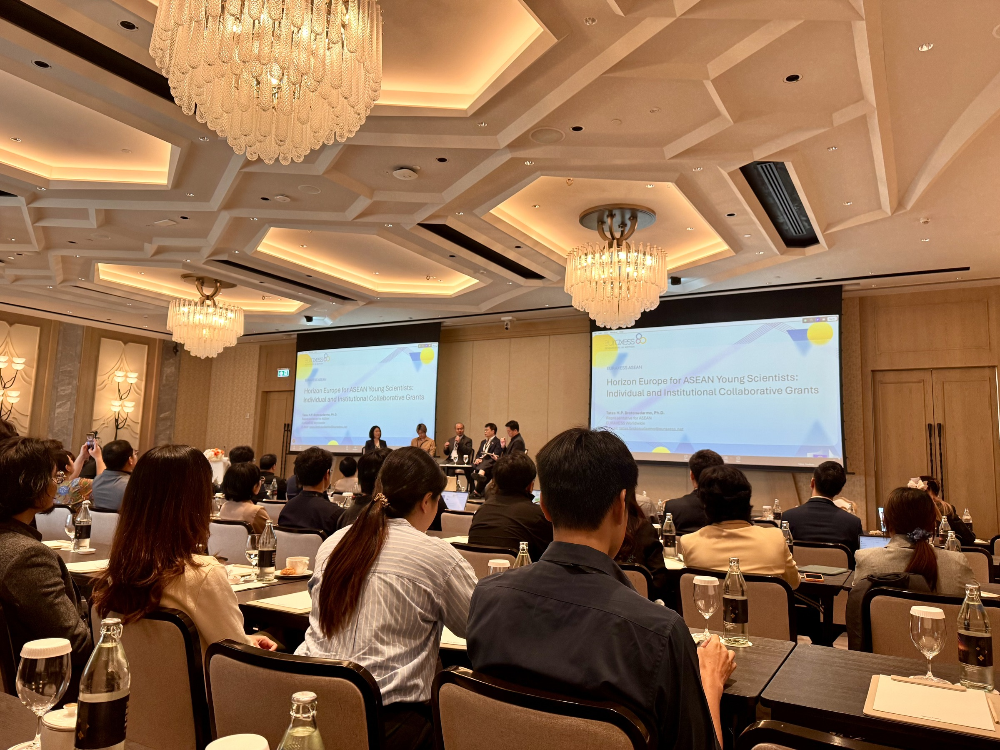
Figure 5: Another highly insightful morning session introducing research opportunities through EURAXESS Worldwide and the European Research Council (ERC). This discussion focused heavily on how ASEAN researchers can connect with broader international scientific ecosystems through collaborative mobility programs, research partnerships, and transnational innovation networks. I particularly appreciated how the session framed science not merely as isolated academic productivity, but as a global knowledge-sharing infrastructure. In the AI era, breakthroughs increasingly happen at the intersection of disciplines, institutions, countries, and cultures. Listening to these discussions inside a ballroom filled with researchers from multiple nations genuinely felt inspiring. It reinforced the idea that future AI systems — especially socially impactful systems such as healthcare AI — must be designed collaboratively, ethically, and globally from the very beginning.
The meta-message across all three: funding for cross-ASEAN science exists in volume. The bottleneck is not resources. It’s teams who can articulate a problem clearly enough to convince a committee in Brussels, London, or Tokyo that Southeast Asian researchers should own the solution.
10:45 – 11:45 | Panel Session: “Building Impactful Research Careers through Global Collaboration”
This session felt more personal. The panelists — senior researchers, program directors — talked about the scaffolding behind impactful careers: mentorship, publication strategy, choosing problems that outlast grant cycles, and the compounding value of international networks built early.
A few lines from this session that stayed with me:
- “Your first international co-author is a career event, not just a paper.”
- “Regional problems need regional researchers. You understand the context. Own it.”
I’ve been in enough rooms where Southeast Asian researchers are positioned as data providers for Western-led projects. This panel pushed back on that framing explicitly. Build the tools. Lead the studies. Publish first-author from your own institution.
11:45 – 12:00 | Session 1: Mini Project Group Discussion — “ASEAN Project Co-Creation”
Short, sharp, intentional. Groups were formed. Problems were surfaced. The brief: find a real, cross-border research gap in your domain, and come back after lunch ready to pitch a solution.
I was placed in Group 4: AI and Digital Transformation.
The room immediately got interesting.
🍽️ Lunch Break — Brainstorming in Disguise
Lunch at Dusit Thani is not the moment to slow down. Half the group kept talking through the meal. What’s the most painful, unsolved, cross-border problem in AI and health across the GMS? What can a small team of researchers actually build — or at least credibly sketch — in a few months?
The Greater Mekong Subregion (GMS) kept coming up. Six countries sharing a river and, as it turns out, sharing a healthcare crisis that nobody outside the region talks about nearly enough.
- Migrant workers crossing from Myanmar, Laos, Cambodia into Thailand face language barriers that make medical triage nearly impossible.
- Rural village health volunteers — the actual frontline of healthcare in communities far from provincial hospitals — have no AI tools designed for their context.
- Existing large language models in healthcare (GPT-4, Med-PaLM, etc.) are trained overwhelmingly on English-language, high-resource medical corpora. They perform poorly in low-resource languages. They require high-bandwidth infrastructure. They are not designed to run offline on a ₿500 Android smartphone.
The gap became clear fast: there is no medical LLM built specifically for the GMS linguistic and infrastructure context.
That became our pitch.

Figure 6: Lunch break at Napalai Restaurant on the first floor of Dusit Thani Bangkok. The venue itself was incredibly elegant, and honestly, the food was excellent. During lunch, I also noticed a massive AYSC2026 banner connected to a much larger international event ecosystem. AYSC2026 was organized as part of “The 14th Annual Meeting of the Global Research Council (GRC),” held in Bangkok from 18–22 May 2026. That detail suddenly explained why there were so many international participants, researchers, and policy representatives throughout the hotel discussing research collaboration and funding strategies. Walking through the venue during lunch felt like walking through a living intersection of science diplomacy, AI innovation, and global academic networking. Some conversations nearby discussed climate science, others discussed AI governance, while another table debated future healthcare systems. It was intellectually energizing in the best possible way.
🤖 13:30 – 15:30 | Session 2: The Pitch — Trans-GMS LLM
The Concept
Trans-GMS LLM — a medical Large Language Model fine-tuned for low-resource, cross-border healthcare environments across the Greater Mekong Subregion.
The architecture philosophy is deliberate: not another foundation model requiring A100s and fiber-optic internet. A lightweight, quantized, instruction-tuned model optimized for:
- Running on mid-range Android devices (≤4GB RAM)
- Operating with intermittent or low-bandwidth connectivity
- Supporting multilingual triage in Thai, Lao, Burmese, Khmer, and Vietnamese
- Interfacing with village health volunteers through gamified, simplified UI — not clinical dashboards
Three disciplines in one stack:
- Computer Science — model architecture, quantization, fine-tuning pipeline
- Public Health — medical safety validation, triage logic, clinical appropriateness
- Behavioral Psychology via Gamification — turning scary clinical data into a friendly, usable product that village health volunteers actually want to open
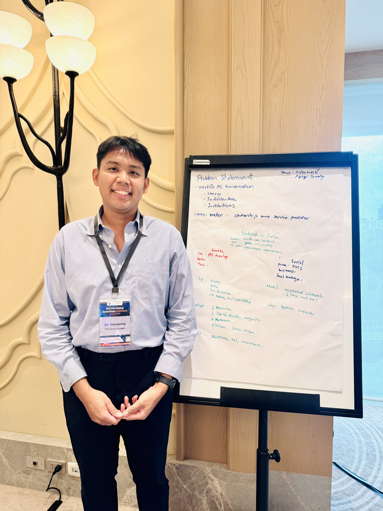
Figure 7: Brainstorming intensely with teammates from Group 4 before the final 3-minute pitching session. This was one of my favorite moments of the entire day. The whiteboard quickly became filled with fragmented ideas about multilingual AI systems, healthcare accessibility, low-resource deployment, migrant populations, gamification, and cross-border medical communication challenges within the Greater Mekong Subregion (GMS). What made the session exciting was how rapidly strangers from different backgrounds transformed into a collaborative team. Professors, engineers, researchers, and AI practitioners openly challenged each other’s assumptions while refining the proposal into something increasingly realistic and impactful. The concept that eventually emerged — Trans-GMS LLM — was not built by a single person. It was the product of collective brainstorming, interdisciplinary thinking, and a shared desire to reduce healthcare inequality through practical AI deployment.
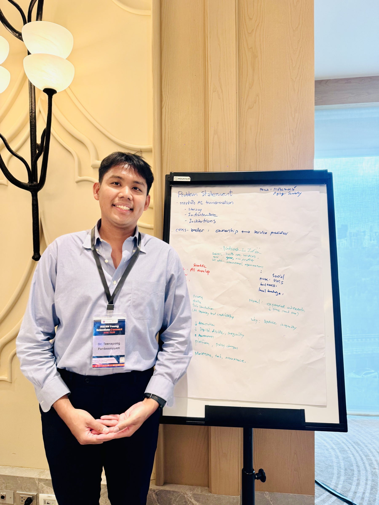
Figure 8: Another perspective from our brainstorming session before the final pitching round. Looking at the whiteboard now feels surprisingly emotional because every handwritten note represented a possible future direction for ASEAN-centered AI systems. We discussed not only technical architecture, but also deployment realism: multilingual adaptation, low-bandwidth inference, healthcare literacy, mobile deployment constraints, community-level usability, and long-term policy integration. One major theme repeatedly appeared throughout our discussion: “AI systems designed for wealthy environments often fail in low-resource communities.” That realization heavily shaped the philosophy behind Trans-GMS LLM. We were not trying to build the biggest model. We were trying to imagine the most deployable and socially meaningful model for underserved populations across ASEAN.
The Technical Core
The fine-tuning strategy the team sketched draws on several well-established techniques now being applied to low-resource multilingual scenarios:
1. Base Model Selection
Start from a multilingual base (e.g., a model with strong Southeast Asian language coverage in its pretraining corpus). The GMS languages — particularly Lao and Khmer — remain deeply underrepresented in most public LLM pretraining sets. Targeted continued pretraining on curated medical texts in these languages is step zero.
2. Instruction Fine-Tuning on Medical QA
Use curated, locally validated medical Q&A datasets in each GMS language. Where parallel corpora don’t exist, synthetic data generation with back-translation and human validation is the pragmatic path. Not ideal. But realistic.
3. Quantization for Edge Deployment
INT4 or INT8 quantization via GGUF/llama.cpp brings model inference into the footprint of a standard Android device. At this compression level, a 7B parameter model can run at acceptable speed without GPU acceleration — which is the actual deployment reality for rural health clinics in Laos or northern Myanmar.
4. Retrieval-Augmented Generation (RAG) for Medical Safety
Rather than baking clinical knowledge into model weights (which creates hallucination risk and complicates update cycles), a RAG layer grounded in WHO SEARO guidelines, MOPH Thailand clinical protocols, and local formularies gives the model a verifiable, updatable knowledge base. When the model doesn’t know something, it says so — and points to the protocol document.
5. Gamified Front-End
This is where behavioral psychology earns its place in the stack. Village health volunteers are not developers. The interface needs to feel like a helpful tool, not a clinical terminal. Symptom trees presented as decision flows. Progress indicators. Local language voice input. Visual outputs that don’t require literacy in clinical vocabulary.
The Roadmap
| Phase | Timeline | Focus |
|---|---|---|
| Research | Months 1–6 | Expand training on localized multilingual medical data; curate GMS-specific medical corpora |
| Validation | Months 7–12 | Pilot in rural community clinics and schools; measure triage accuracy vs. baseline |
| Translation | Year 2 | Deploy to village health volunteers; train local champions; gather real-world feedback |
| Commercialization & Policy | Year 2–3 | AI-as-a-Service platform; HealthTech partnerships; ASEAN Health Sector policy push |
🎙️ 3 Minutes. One Shot.
Group 4’s representative for the pitch: me.
The script we built together during the afternoon session — and the one I delivered — followed a structure I’ve come to think of as emotional anchor → technical credibility → concrete roadmap → direct impact. Here’s the arc:
Opening hook: Close your eyes. Imagine a family in a remote Mekong village. Someone is sick. What happens? The harsh reality is that they have no voice and almost no access to care. They can’t afford specialists. They don’t speak the dominant language. They are locked out by an AI divide they didn’t create.
The reveal: That’s why we built Trans-GMS LLM — a medical LLM fine-tuned for low-resource environments. And yes, I fine-tuned the core model myself, because I wanted to prove that young ASEAN scientists don’t just consume foreign AI. We build our own.
The credibility layer: Unlike Western models that require expensive infrastructure, Trans-GMS LLM is lightweight and quantized. It runs on basic smartphones with low bandwidth. Schools can use it for health literacy. Clinics can use it for multilingual triage.
The roadmap: Four phases, two years, one goal — get expert medical knowledge into the hands of the people who need it most.
The close: Health equity. Not as a slogan. As a deliverable. Let’s use our code to heal borders and save lives.
The room was quiet for exactly the right number of seconds after I finished.
Then the moderator opened Q&A.
Two minutes of questions. The judges pushed on the data sovereignty angle (fair — training on GMS patient data has serious governance implications), on regulatory approval pathways, and on whether “gamification” was a serious medical design choice or a marketing layer. Good questions. Hard questions. The kind you want.
After the session: relief. Then energy.
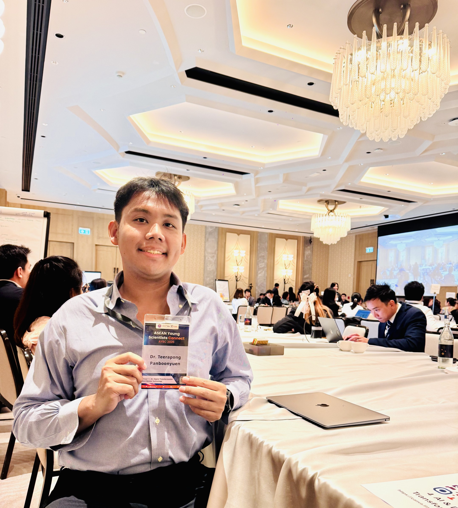
Figure 9: Immediately after finishing the live pitching session as the representative speaker for Group 4. Honestly, this photo captured pure relief. Delivering a 3-minute AI healthcare pitch in front of researchers and moderators from across ASEAN felt both exciting and terrifying at the same time. The presentation focused on “Trans-GMS LLM,” a lightweight multilingual healthcare language model designed for low-resource deployment across the Greater Mekong Subregion. We discussed healthcare inequity, migrant accessibility challenges, AI democratization, multilingual deployment, and the importance of building ASEAN-owned AI infrastructure rather than depending entirely on imported systems. Somehow, the presentation finished perfectly within the time limit — followed immediately by additional Q&A from moderators and audience members. After stepping down from the stage, I finally felt the tension disappear and asked one of my teammates to help capture this moment before the adrenaline wore off completely. Definitely one of the most memorable moments of AYSC2026 for me.
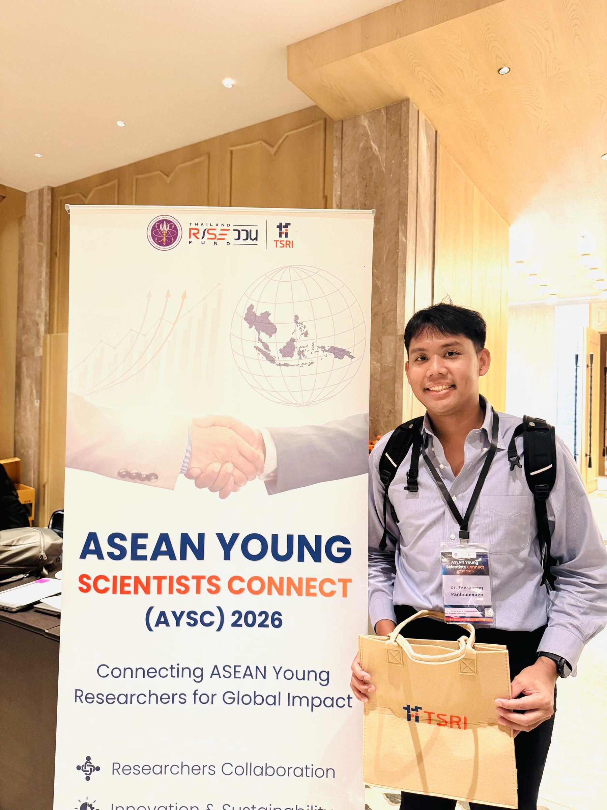
Figure 10: Taking one final photo with the official ASEAN Young Scientists Connect (AYSC) 2026 event banner before heading home. By this point, the event had already transformed from a simple academic activity into something much more meaningful personally. Throughout the day, I met researchers from different countries, discussed AI systems for healthcare and education, exchanged ideas about deployment challenges, and experienced firsthand how collaborative scientific communities operate across ASEAN. These moments matter because they remind us that research is ultimately a human activity. Papers, models, and algorithms are important — but the relationships, conversations, and collaborative trust built between researchers are often what enable the most impactful innovations years later.
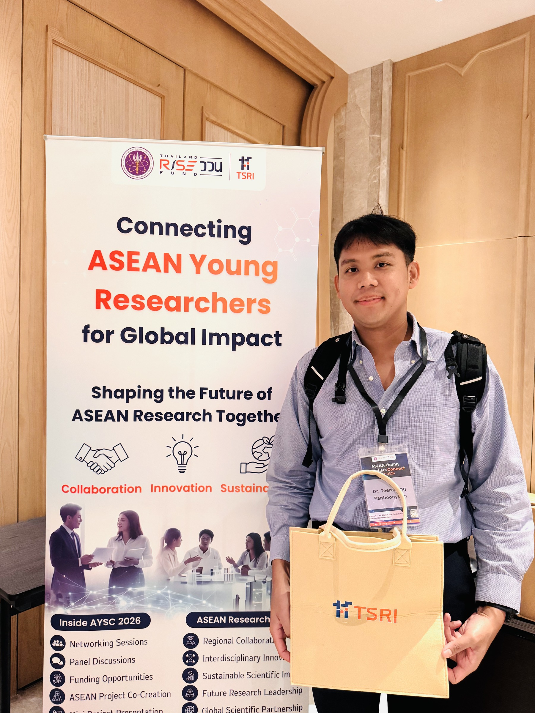
Figure 11: Another photo before leaving Dusit Thani Bangkok after a full day of discussions, collaboration, and pitching. The energy throughout the event remained consistently inspiring from morning until evening. AYSC2026 successfully brought together technical researchers, funding agencies, policymakers, and young scientists into the same physical space — something increasingly important in the modern AI era. AI systems no longer exist purely inside research papers. They now interact directly with healthcare systems, education systems, governments, economies, and public infrastructure. Events like this demonstrate why interdisciplinary collaboration will likely become one of the defining characteristics of next-generation AI research in ASEAN.
🏁 Closing Thoughts: A Pattern Forming
This was the third event in as many days.
- AutoTech Aftermarket Summit 2026 — BITEC Bangkok
- Super AI Engineer Thailand Season 6 — Pathum Thani
- ASEAN Young Scientists Connect 2026 — Dusit Thani Bangkok
Each one a different context. Each one a different mode: attendee, teacher, researcher, pitcher. The through-line is always the same thing: showing up fully, then going home and thinking harder.
What AYSC 2026 reminded me — and what Trans-GMS LLM made concrete — is that the most interesting AI problems in Southeast Asia are not benchmark problems. They are not leaderboard problems. They are healthcare access problems and language equity problems and infrastructure reality problems that will not be solved by importing Western AI defaults into GMS contexts and hoping for the best.
The best work happens when the people who understand the context own the technical stack. That’s what our group pitched. That’s what I believe.
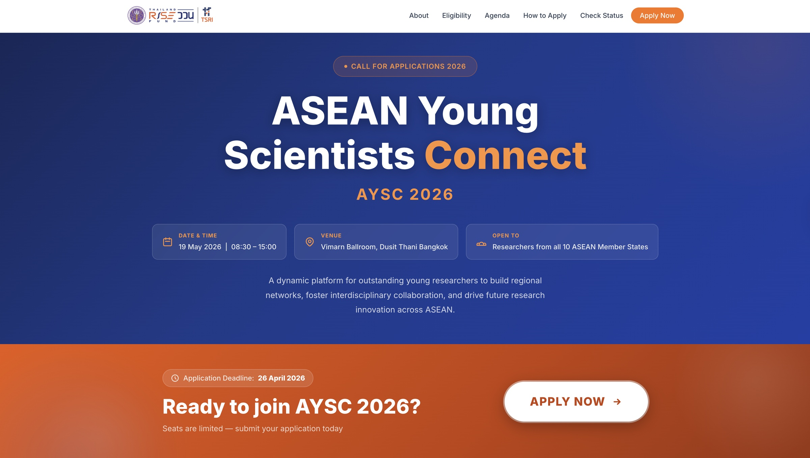
Figure 12: Screenshot of the official ASEAN Young Scientists Connect (AYSC) 2026 website. The event was organized around the theme: “Strengthening Regional Research Collaboration for Collective Impact.” Looking back after participating, I genuinely think the organizers succeeded in creating exactly that environment. The event was not only about presentations or networking — it was about encouraging researchers to imagine how ASEAN can collaboratively build long-term scientific and technological infrastructure together. Official website: https://aysc.tsri.or.th/
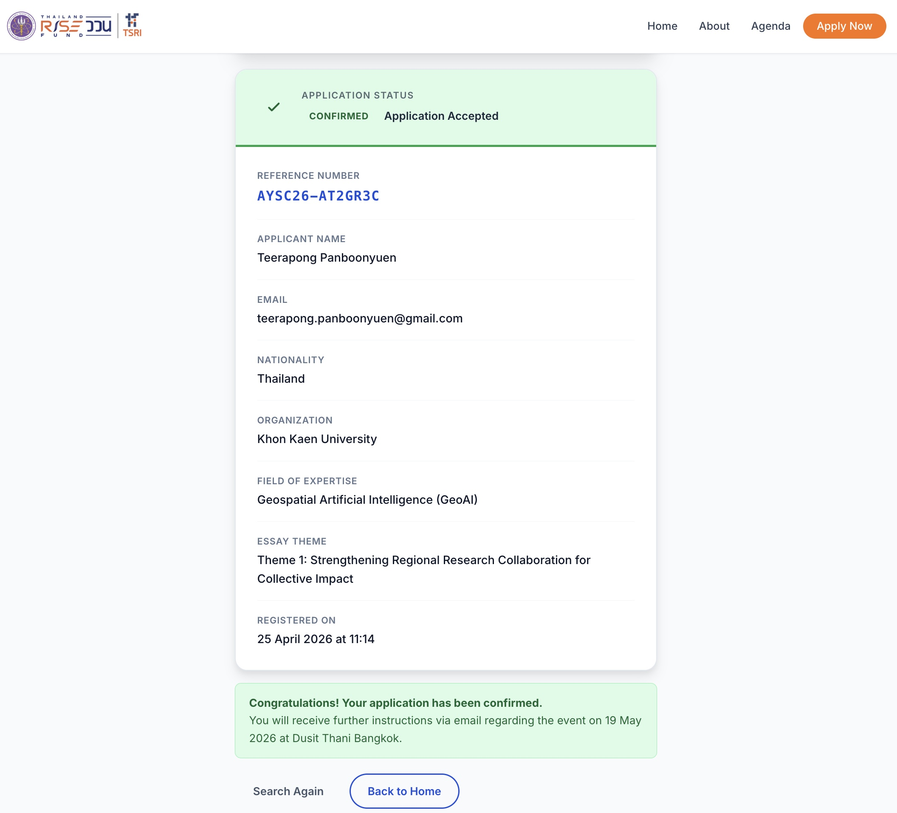
Figure 13: Official acceptance announcement confirming my participation in ASEAN Young Scientists Connect (AYSC) 2026. I attended the event as an Adjunct Professor affiliated with the College of Computing, Khon Kaen University. Seeing the acceptance result still feels meaningful because opportunities like this are never only about attending conferences. They are opportunities to contribute ideas, represent research communities, build collaborations, and participate in shaping future scientific directions within the region. Looking back now, I am genuinely grateful I decided to apply. AYSC2026 became far more memorable, intellectually stimulating, and inspiring than I initially expected.
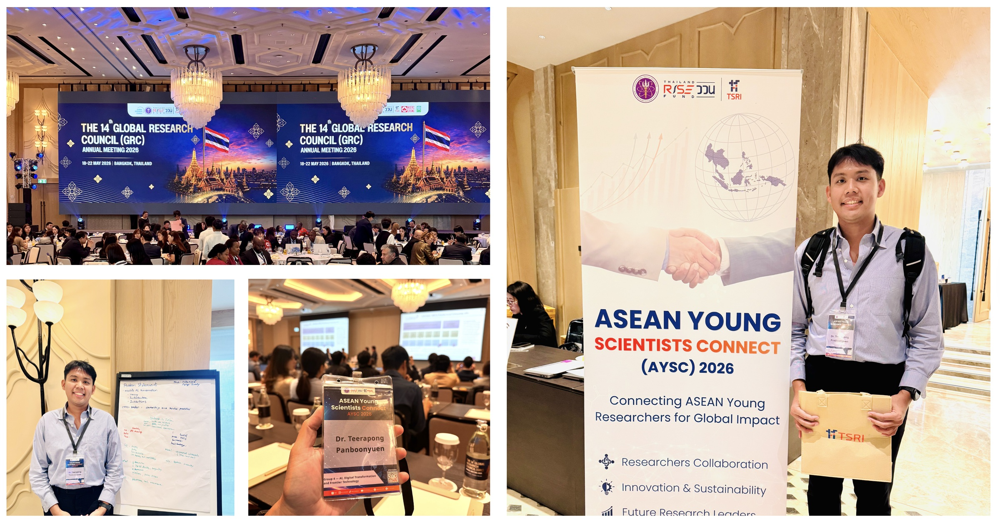
Figure 14: A personal highlight collage capturing some of my favorite moments from AYSC2026. Looking through these photos afterward made me realize how emotionally dense this single day actually was: excitement, pressure, collaboration, nervousness before pitching, relief afterward, and genuine happiness from meeting so many new researchers and friends. Scientific events are often remembered through publications or official outcomes, but sometimes the most valuable memories come from spontaneous human interactions: brainstorming at a whiteboard, discussing ambitious ideas over coffee, or laughing together after surviving a stressful presentation session. AYSC2026 will definitely remain one of the most memorable research-related experiences of this year for me.
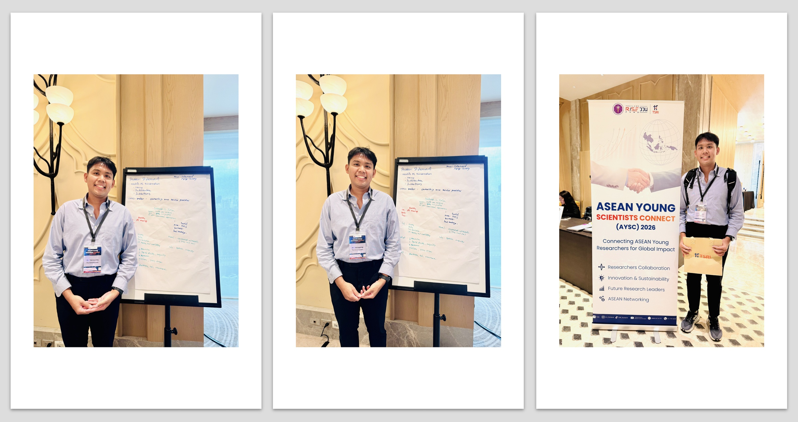
Figure 15: Another visual highlight from an unforgettable day at AYSC2026. One thing I deeply appreciated throughout the event was how naturally conversations evolved between technical AI discussions and broader societal questions. People were not only discussing models and technologies — they were discussing impact: healthcare access, education inequality, sustainable development, scientific diplomacy, and regional collaboration. That balance between technical depth and human-centered thinking is something I personally believe ASEAN AI research should continue emphasizing moving forward.
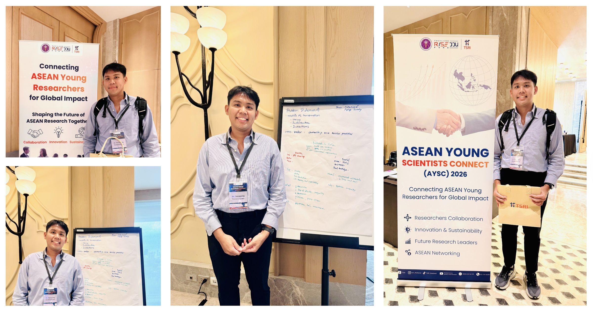
Figure 16: Final memory collage from ASEAN Young Scientists Connect 2026. After several consecutive events this month — including Super AI Engineer Thailand and AutoTech Aftermarket Summit 2026 — this event felt like a powerful conclusion to an incredibly intense but rewarding stretch of professional activities. And honestly? After all the presentations, networking, and discussions, I suddenly found myself missing something simple: coding quietly at night, training AI models, reading papers deeply, debugging inference pipelines, and experimenting with new research ideas. Public events are exciting, but deep research mode still feels like home.
Now I’m back.
Reading queue: three papers on low-resource multilingual fine-tuning, one on quantization-aware training for biomedical NLP, and a WHO report on digital health in the GMS that I’ve been meaning to finish for two weeks. The swim training, the runs, the triathlon prep, the piano practice — all of it gets folded back in. That’s the rhythm.
But first: sleep. Earned.
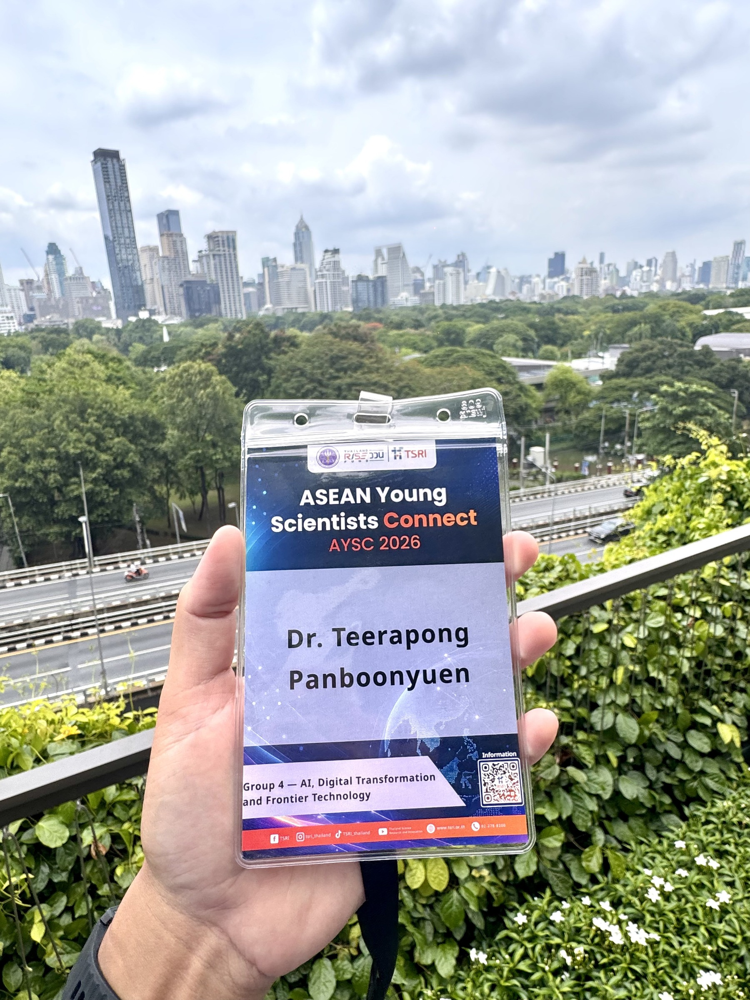
Figure 17: Before heading home, I stopped briefly at Dusit Central Park to walk around and decompress after an incredibly full day. Seeing the evening skyline together with Lumphini Park instantly triggered another side of my brain entirely: endurance training mode. Looking at the park honestly made me want to start preparing for another half marathon again. Funny how quickly the mind shifts between AI systems, research collaboration, triathlon training, and life reflection after long events like this. AYSC2026 was intellectually inspiring, emotionally energizing, and genuinely fun from beginning to end. Most importantly, I left the event with many new friendships, new ideas, and renewed motivation to continue building meaningful AI systems for the future. Until the next event.
Thanks to every member of Group 4 — the brainstorm was genuinely collaborative and the pitch was built by all of us. Proud of what we made in two hours with a whiteboard and a shared stubbornness about inequality.
🔗 AYSC 2026: aysc.tsri.or.th
Citation
Panboonyuen, Teerapong. (May 2026). ASEAN Young Scientists Connect 2026: Pitching Trans-GMS LLM at Dusit Thani Bangkok. Blog post on Kao Panboonyuen. https://kaopanboonyuen.github.io/blog/2026-05-19-asean-young-scientists-connect-aysc-2026-pitching-trans-gms-llm/
For a BibTeX citation:
@article{panboonyuen2026aysc,
title = "ASEAN Young Scientists Connect 2026: Pitching Trans-GMS LLM at Dusit Thani Bangkok",
author = "Panboonyuen, Teerapong",
journal = "kaopanboonyuen.github.io/",
year = "2026",
month = "May",
day = "19",
url = "https://kaopanboonyuen.github.io/blog/2026-05-19-asean-young-scientists-connect-aysc-2026-pitching-trans-gms-llm/"
}
Thank you for reading this reflection on ASEAN regional collaboration, low-resource AI systems, healthcare accessibility, and cross-border innovation through Trans-GMS LLM. 🌏🤖🏥
This experience at ASEAN Young Scientists Connect (AYSC) 2026 represents more than a technical pitching session — it reflects the collective spirit of young ASEAN researchers, scientists, and innovators working together to build inclusive AI technologies for underserved communities across the Greater Mekong Subregion.
Special thanks to every teammate, researcher, moderator, organizer, and participant who contributed ideas, energy, and inspiration throughout the brainstorming and pitching sessions. Together, we demonstrated how AI can become a bridge for health equity, multilingual communication, and regional cooperation.
Teerapong Panboonyuen
My research focuses on leveraging advanced machine intelligence techniques, specifically computer vision, to enhance semantic understanding, learning representations, visual recognition, and geospatial data interpretation.